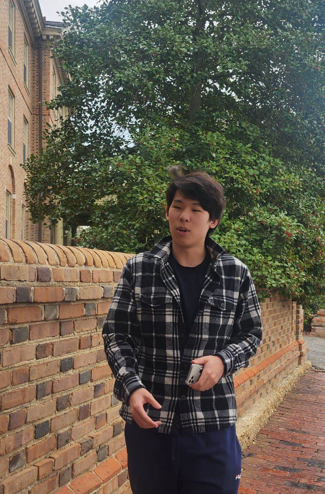
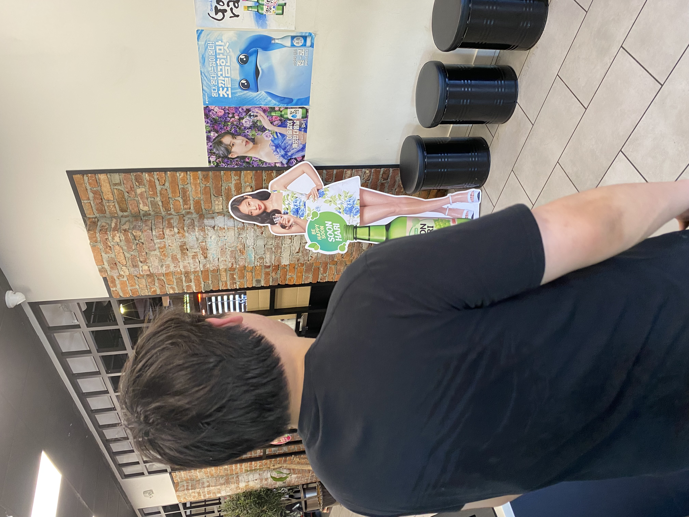

About Me
Hello! Welcome to my portfolio website. I'm Derek Kwon and I am a recent graduate from the College of William & Mary. I enjoy expressing myself and my imagination through code and regularly work on websites and games as passion projects. I'm currently actively looking for a full-time position or internship in cybersecurity or game development.
Skills
General Skills
Programming Languages
Cybersecurity Skills
Other Languages
Links & Contact
Email: derek9132@gmail.com
Phone #: 7032156007
LinkedIn: https://www.linkedin.com/in/derek-kwon-320b93201/
GitHub: https://github.com/Derek9132
Education
School: College of William & Mary
Dates: Jaunary 2022 - Jaunary 2025
Degree: Bachelor's in Science
Major: Computer Science
GPA: 3.60
Relevant Courses:
- Data Structures
- Intro to Software Development
- Cyber and Info Security
- Web Programming
- Computer Graphics
- Intro to Game Development
- Reinforcement Learning
Transcript Download: Click Here
Work Experience: Content Data Specialist Intern
Organization: Tesla Goverment
Location: Falls Church, VA
Dates: June 1st, 2023 - August 25th, 2023
Job Type: Temporary Internship
Reference: Caitriona Cobb @ caitriona.cobb@teslagovernment.com
Responsibilities & Achievements
- Gained security training in handling classified information (FOUO, PII, CUI) to learn how to maintain confidentiality of company data
- Wrote Python scripts and used pandas library to automate cleaning, filtering, and reformatting of maritime data so that it could be properly displayed on maps on company's information sharing site
- Collaborated in a team on a natural language model to assign topic tags to foreign relations articles and won 2nd place in a company-wide hack-a-thon
- Worked with a partner and used RStudio to make bubble plot visualizations for African foreign relations data in a data visualization competition that the company used to gather visualizations for Africa
- Scraped data from both English and Korean online sources using Selenium and BeautifulSoup to add to company's database on North Korea
Work Experience: Data Intern
Organization: MacDowell Law Group
Location: Fairfax, VA
Dates: August 5th, 2024 - September 10th, 2024
Job Type: Temporary Internship
Reference: Richard F MacDowell @ 7032772811
Responsibilities & Achievements
- Used natural language processing and regular expressions in Python to reformat large spreadsheets of client data
- Compared and pinpointed differences between spreadsheets using Python after the organization suffered a power outage
- Acted as a consultant regarding a potential 3rd party software vendor interested in adding their AI bot to the company website
Projects
- Java GUI Memory Game
- Penetration Testing Labs
- Web Programming Group Project
- Game Development Group Project
- Reinforcement Learning Final Project
- Google Cybersecurity Certificate
- Cybersecurity Projects Portfolio
- Personal Project: Solo Game in Development
Java GUI Memory Game
This card-flipping GUI memory game made using Java was the culmination of the object oriented programming concepts and model-view-controller software architecture that I learned in my Intro to Software Development course.
The program listens for user input with the controller class, sends the input to the game model class which updates the internal game state, and finally updates the view class which listens for any changes on the model class.
This project taught me that good software architecture is not only important but is also much more pleasant to read and work with.
Penetration Testing Labs
Google drive linkIn my cybersecurity course, I had the opportunity to participate in several pentesting labs on a dummy vulnerable server.
I performed SQL and command injection attacks against a web server that does not sanitize input, exploited poor session management and failure to encode output with cross-site scripting and cross-site request forgery, and installed a backdoor with a vulnerable version of a third party software and a trojan.
These penetration tests gave me a strong awareness of software and code vulnerabilities that I did not previously have, and I now code with security in mind.
Web Programming Group Project
https://web-programming-3wtf.vercel.app/ GitHub RepositoryFor my final project in my web programming course, I worked in a team with 6 other students to develop a virtual meeting room website that uses Robert's Rules of Order for more organized meetings. Features include a user registration system with a profile picture upload, a dashboard for viewing and joining committees, a committee page with the motions and members of each committee, and a chatroom for discussing each motion.
I was in charge of the backend functionality and database. I set up a cloud database with Microsoft Azure that my team could connect to and implemented user registration and authentication, creating and joining committees, creating and voting on motions, and uploading profile pictures. I also helped with the frontend as needed and I used CSS to style the dashboard and the chatroom. Because I was taking my cybersecurity course in the same semester, I took the responsibility of adding prepared statements and hashing passwords with bcrypt.
The cloud database is no longer running to avoid incurring fees, but the website and code are available for viewing.
Game Development Group Project
GitHub RepositoryIntro to Game Development was easily one of my favorite classes in my time in college and it is also where I developed one of my most memorable projects.
A team of scientists being dispatched to a newly discovered planet that was discovered to be able to support life. One of the scientists brings along his beloved pet cat. Though originally brought for emotional support, the cat's role would become much more important when the owner is bitten by one of the planet's alien mice which carry an unknown disease. The cat needs to use its feline instincts and skills to neutralize the mice and collect the components for a cure. That is the plot of our game and final project: Cataclysm.
I worked in a team of 3 other students and I learned a lot about good object oriented design and collaborative development and version control. I was in charge of the entire game's art direction and graphics. All the sprites and animations as well as the tilemap was made by yours truly. I also implemented the map rendering and the NPC interaction and text boxes, and made changes to the input handler to play the correct animations with the player's input.
Here are some sprites that I am especially proud of:
Reinforcement Learning Final Project
My Reinforcement Learning course gave me the opportunity to work on a genuinely interesting project. I used Unity's ML-Agents library to train game actors to play hide-and-seek with each other.
For my training environment, I set up multiple stages each with its own obstacle as well as a few large stages with all the obstacles combined. The seeker agent is given a large reward whenever it makes contact with the hider agent, and the hider agent is given a small reward for each second it avoids touching the seeker and a large penalty upon making contact with the seeker. Both agents have raycasts to see where the other is. Here is a video of the training environment:
The agents were trained for 6,750,000 steps, which is roughly 4-5 hours. The following video compares the agents in the first 10 minutes of the training and near the end of the training:
Though not everything went according to plan, this project was still a wonderful experience that gave me greater insight into reinforcement learning and AI in general.
Google Cybersecurity Certificate
Google drive linkI decided to take this certificate to strengthen my knowledge of the cybersecurity field after finding genuine fun and passion in my college cybersecurity course.
While my college course was focused mainly on red team security, the certificate allowed me to experience the other side by focusing on blue team activities. Here I mastered many of the strategies and tools that professionals use to secure networks and servers against a wide variety of attacks, some of which I used in my penetration testing labs. Wireshark for packet sniffing, Linux for assigning privileges and implementing different access controls, and Python for automating security tasks are all areas I am confident in now thanks to the certificate.
The certificate has also helped prepare me for the CompTIA Security+ Exam, which I am planning to take sometime in July 2025.
Cybersecurity Projects Portfolio
https://github.com/Derek9132/cyber-projectsWhen I am not studying for my Security+, I am applying my skills through practical and interesting projects.
I have written a file and URL scanner in Python using the VirusTotal API to compare against known malicious file hashes and URLs. This project has given me a greater understanding of the cybersecurity community and the open intelligence it provides.
I also have a simple keylogger written in Python. The program records all keystrokes and logs them into a .txt file. It is also a .pyw file which does not invoke the console window and runs in the background, hidden to an unexperienced user. This has taught me the power and potential danger of keyloggers.
For my next project, I am working on building a honeypot-like environment in which I can open malicious links and files found in phishing emails and track the attackers' movements.
Personal Project: Solo Game in Development
In my spare time, I am working on a game inspired by my favorite shark: the thresher shark. These sharks use their massive tails like whips to stun and kill small fish. They also have a face of perpetual concern and anxiousness:
I want this game to be an open-world exploration game where the shark needs to defend itself with its tail and solve puzzles to find its family. I also want to implement a shark's ability to detect electrical fields given off by an animal's heartbeat. Using this ability, the player will be able to detect enemies approaching in dark waters where visibility is reduced.
Photos

Photos
